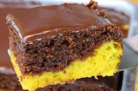

O bolo de cenoura é um bolo muito bom e macio para um café e ter um momento de qualidade com quem amamos
Um bolo gostoso, docinho e maravilhoso pra surpreender os amigos e familiares ou café E para isso, bolo de cenoura é considerada por muitos como a melhor a variedade, por ser um bolo macio e doce.